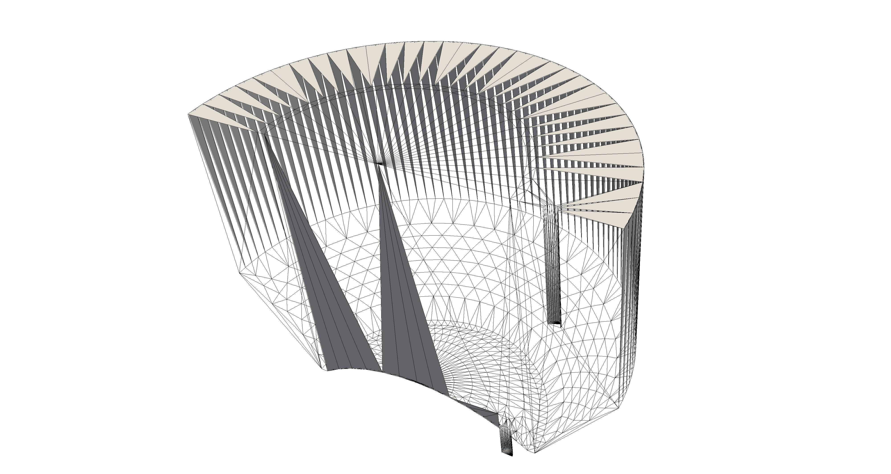

The title of your presentation
Your name
The title of your presentation
Your name
Additional information
Problem
Geometry .stl

Problem
You want this:

Problem
But you get this:

Origin: non-closed .stl file
SurfaceCheck
>> surfaceCheck foo.stl
Output:
Surface is not closed since not all edges connected to two faces:
connected to one face : 228
connected to >2 faces : 2
Conflicting face labels:234
Dumping conflicting face labels to "problemFaces"
Paste this into the input for surfaceSubset
SurfaceSubset: visualising the problem
Write subset of the triSurface (foo.stl) to separate .stl (problemFaces.stl)
Requirements:
- surfaceSubsetDict
- reference zone/surface
- output of surfaceCheck (problemFaces)
Examples can be found here
>> surfaceSubset SubsetDict foo.stl problemFaces.stl
SurfaceSubset: visualising the problem
>> paraFoam
Visualisation of .stl in paraView only works when there is already a mesh loaded ?!
SurfaceSubset: visualising the problem

Holes between flat and curved surfaces!
SurfaceSubset: visualising the problem

Holes between flat and curved surfaces!
SurfaceSubset: visualising the problem
The solution
Change triangulation parameters in CAD (Max. edge length, aspect ratio):
- tune parameters on smallest surface
- use parameters to export all surfaces
The solution
>> surfaceCheck newFoo.stl
Output:
Surface is closed All edges connected to two faces.
Number of unconnected parts : 1
Final notes
Note 1: There are multiple ways of achieving a watertight geometry
- Several STL repairing tools are available
- OpenFOAM utility: surfaceMeshTriangulate
- Nevertheless: "Voorkomen is beter dan genezen", "a stitch in time saves nine"
Note 2: In some CAD tools it is not possible to specify triangulation parameters (Salome?) In that case you should mesh each surface with the same segment length and export to .stl